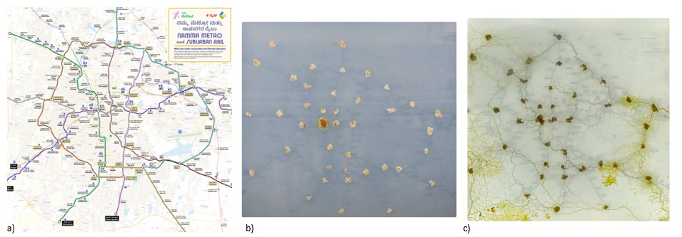

Hello there
I'm Litralson Eluvathingal (he/him). I graduated from the Indian Institute of Science (IISc), Bengaluru with a Bachelor's and Master's in Biology (BS-MS), a research-oriented interdisciplinary programme. My research focused on cell biology — exploring how organelle morphology changes under different physiological conditions, and how receptor protein distribution affects signalling dynamics, using super-resolution microscopy.
I'm currently interested in emergent properties in biological systems: pattern formation through reaction-diffusion systems, collective behaviour, and cellular intelligence. As a natural extension, I'm also drawn to the bottom-up approach to designing systems, where interactions between individual components give rise to system-level properties. The transition from local to global optimisation is something I'd like to explore further.
In my free time, I enjoy reading and photographing life around me — mostly insects, occasionally humans. I also appreciate well-thought-out design, whether in information design, architecture, institutional structure, or consumer products.
Selected work
-
Slime Mold (Physarum polycephalum): Emergent Networks for Urban Planning
Physics of Life · Physarum polycephalum · Emergent Properties · Urban Planning
Through this project, I tried to replicate the work of A. Tero et al. 2010, who showed that networks formed by slime moulds are similar in efficiency, cost, and fault tolerance to the Tokyo rail network. Here I wanted to see how slime mould optimises connections between the proposed Namma Metro and Suburban stations in Bengaluru. This was developed with TIFR-ICTS for the Sci560 exhibition season at Science Gallery Bengaluru.

Slime Mould — Bengaluru Map Experiment. a) Reference map used for placing oats, originally prepared by Captain Naveen Chandra, Praja RAAG. b) Oats placed at Metro and Suburban Railway Stations; slime mould inoculated at Majestic Metro Station. c) The resulting network after ~6 days.

SGB Mediator Training. Talk given at Science Gallery Bengaluru about the Bengaluru Map Experiment. Photo: Disha Kuzhively.
-
Autophagy: Simulating Autophagosome Biogenesis
Biophysics · Autophagy · Molecular Dynamics Simulations
We worked on large-scale molecular dynamics simulations of phagophore membranes with embedded LC3 proteins, aiming to improve our understanding of macroautophagy — the process cells use to remove waste materials. We tried to decipher the curvature-generating effects of LC3 proteins on endoplasmic reticulum membranes. The LC3-PE complex can be thought of as a lipid with a large head group; clustering of these complexes could alter membrane curvature through steric effects.
BUMPy Phagophore Builder — a modified version of the BUMPy Python package by Kevin J. Boyd, for generating custom phagophore membrane shapes.
-
Notch Signalling Dynamics: Protein NanoDomains on Membranes
Monte Carlo Simulations · Cell Blender · MCell · Reaction-Diffusion Systems · Super-resolution Microscopy
I used Super-Resolution Microscopy (STORM) to map Notch-1 distribution on a cell membrane and quantified its spatial properties. We then simulated that distribution using a reaction-diffusion model and analysed how nanodomain arrangement affects signalling dynamics.
-
Mitochondrial Dynamics: Nanoscale Mapping of Mitochondrial Topography in Heterologous Cell Lines
SRRF · Super-resolution Microscopy · Mitochondrial Fission & Fusion · Image Processing · CRISPRi
Quantified mitochondrial volume in Neuro-2a cells using SRRF and 3D rendering at different SIRT3 expression levels. We observed differences in the distribution of punctate, intermediate, and filamentous mitochondria across expression conditions. The project spanned primer design, plasmid cloning, CRISPRi, transfection, immunocytochemistry, and image processing.
-
Lysosome Biogenesis: Investigating the Role of the Golgi Apparatus
Lysosome Biogenesis · SRRF · Structured Illumination Microscopy · Keratinocytes · 3D Rendering
We investigated the role of the Golgi apparatus in the maturation of specialised lysosomes in differentiated keratinocytes. I was involved in image acquisition and 3D rendering of organelles to observe and quantify contact sites between these organelles, using SRRF and SIM.
Sarmistha Mahanty, Ptissam Bergam, Vivek Belapurkar, Litralson Eluvathingal, Nikita Gupta, Bruno Goud, Deepak Nair, Graça Raposo & Subba Rao Gangi (2024). Biogenesis of specialised lysosomes in differentiated keratinocytes relies on close apposition with the Golgi apparatus. Cell Death & Disease, 15(7), 496.
DOI: https://doi.org/10.1038/s41419-024-06710-w